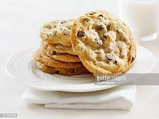

Cookie Recipe

Description
This delicious cookie is favorited by Isahi.
the way to his heart is through this cookie recipe
- flour
- basking soda
- salt
- butter
- sugar
- brown sugar
- egg
- vanilla
- chocolate chips
- nuts
- Heat oven to 375°F. In small bowl, mix flour, baking soda and salt; set aside.
- In large bowl, beat softened butter and sugars with electric mixer on medium speed, or mix with spoon about 1 minute or until fluffy, scraping side of bowl occasionally.
- Beat in egg and vanilla until smooth. Stir in flour mixture just until blended (dough will be stiff). Stir in chocolate chips and nuts.
- Onto ungreased cookie sheets, drop dough by rounded tablespoonfuls 2 inches apart.
- Bake 8 to 10 minutes or until light brown (centers will be soft). Cool 2 minutes; remove from cookie sheet to cooling rack. Cool completely, about 30 minutes. Store covered in airtight container.
- Eat and Enjoy!